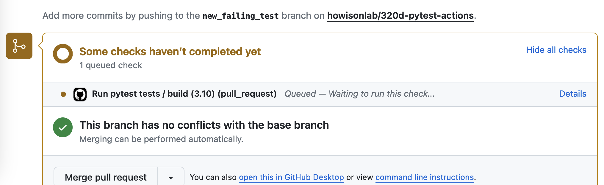
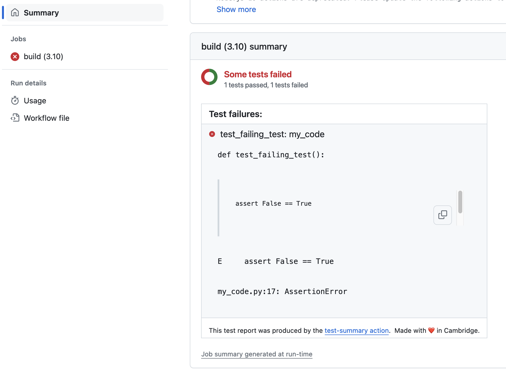
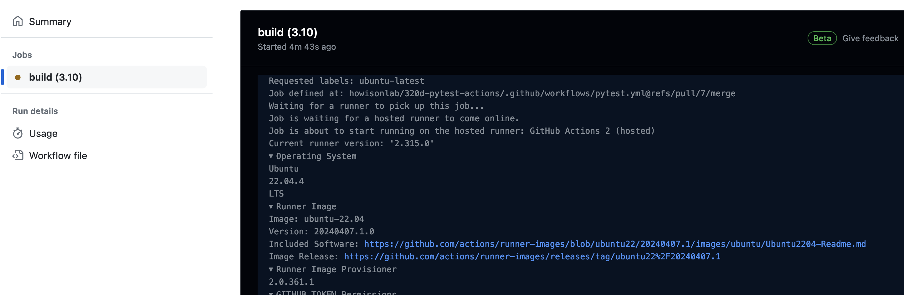
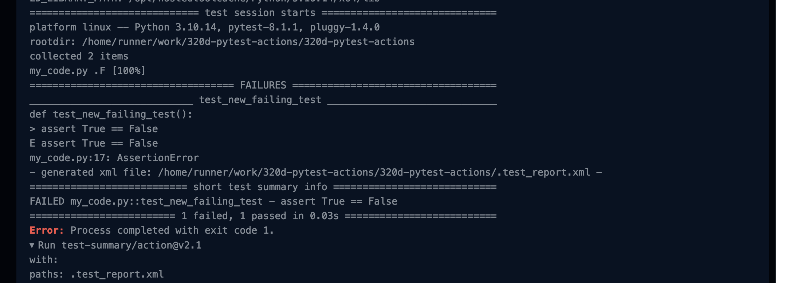
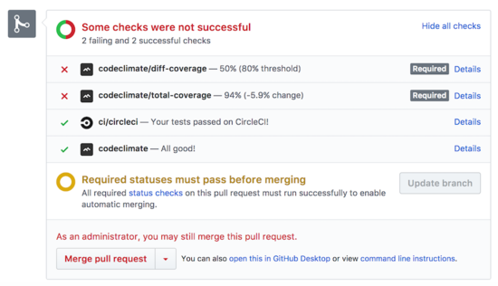

22 Continuous Integration (aka CI/CD)
Continuous Integration encourages frequent merging of developing code, running the test suite to ensure that nothing is merged to main unless all the tests pass.
Continuous integration helps a project to stay synchronized, acheiving coordination by managing dependencies between activities. Some of the sources of change that can cause issues for projects are:
- Parallel development: When developers are working in parallel, their work can become de-synchronized. We discussed merges and rebase as approaches to re-synchronizing, but even with those sources of help when work is separate for longer periods of time misunderstandings can result. Small changes, frequently merged, are also easier for other developers to understand.
- Changes in the package ecosystem: Packages that the project is built on top of changing over time, new versions or security updates.
- Regressions Where bugs that were dealt with reoccur after changes. Regressions happen because, despite a fix, the situation that created the bug in the first place continues. For example, that might be due to the logic or architecture creating common misunderstandings, or having complex special cases that interact in ways that are hard for developers to keep in their mind as they program.
Projects accomplish Continuous Integration by: 1. Having policies that encourage small units of work (sometimes known as “atomic commits” using the idea of an atom as a particularly small building block.). An example of a policy would be requiring formal code review as part of a PR, where one criteria being examined is whether the PR could be split into smaller units of work. 2. Automatically running test suites.
In this class we will focus on automatically running test suites. In Chapter 21 we introduced a test framework called pytest. Recall that we created new functions whose name begins with test_ and includes assert statements that run code and compare actual output with expected output. When they don’t match, the test fails. Here is our example of a test:
def test_fix_phone_num():
assert fix_phone_num("5125558823") == '(512) 555 8823'To achieve continuous integration, we want to be sure that all of these tests are run automatically before any code is merged. When we merge, git and GitHub can tell us if the merge would case any syntax issues (whether the code merges cleanly at a typing level), but only a test suite can tell us if code will merge cleanly at a semantic level (if the resulting code will perform as we expect).
22.1 Automating tests
To run these tests we need to undertake these steps:
- Establish a computing environment in which the code can run.
- Install the code from the project as though the PR had been accepted (see FAQ: Section A.5)
- Install any dependencies that the project needs
- Run the needed test command (here that will be
pytest my_code.py) - Gather the results, and display them alongside the PR.
These steps can be undertaken by quite a few different systems. We will learn using GitHub Actions, but see Section 22.3 for alternatives.
22.1.1 Github Actions
Github Actions is a GitHub feature that enables automation in repositories, including continuous integration.
To establish an automation we have to add a file to the repository, in the .GitHub/workflows directory. This file tells GitHub Actions what to do when particular events occur.
name: Run pytest tests
on:
pull_request:
branches: [ main ]The first part of the file (shown above) provides a name for the workflow (Run pytest tests) and establishes a trigger for the workflow to be run. Here we specify that we want this workflow to run whenever there is a pull_request to the main branch (thus covering the usual situation for PRs).
Then next parts of the file layout the abstract steps as shown above:
First we establish the operating system for the test runner virtual machine. Here we say that we want to use ubuntu-latest (which is a flavor of unix), and that we want to test against python 3.10.
jobs:
build:
runs-on: ubuntu-latest
strategy:
matrix:
python-version: ["3.10"]Then we specify that we want to checkout the code for the PR. Github Actions allows us to refer to chunks of code defined by GitHub. This is just like using a function from a library (where the uses command gives the name of the function and the with block provides parameters)
steps:
- uses: actions/checkout@v4Then we actually install the needed version of python.
- name: Set up Python ${{ matrix.python-version }}
uses: actions/setup-python@v4
with:
python-version: ${{ matrix.python-version }}Then we install any needed dependencies (here we just check that pytest is installed)
- name: Install dependencies
run: |
python -m pip install --upgrade pip
pip install pytestFinally we reuse a community contributed piece of code called pytest-summary and give it the parameter my_code.py so that we know which file pytest will run against (see documentation of pytest-summary here). pytest-summary both runs the tests and provides a template so that GitHub can pretty print the test results.
- name: Pytest summary
uses: dariocurr/pytest-summary@v2
with:
paths: my_code.pyThe easiest way to create GitHub Actions files is using the “Actions” tab and then the “New Action”. Github shows a “marketplace” of community (and commercially) contributed workflows, but you can provide your own file by hitting the “set up a workflow yourself” button.

Once that full file into our repo in the special .github/workflows/pytest.yml location, then GitHub will see the file and add this new check to a new PR when it is opened.

If you click on the “Details” link you move over to the Actions tab and, once the test run is complete (time seems to vary, usually it is very fast), you will see the Summary details (generated by the pytest-summary package).

If you delve deeper into the “build” section you can see the full logfile of the action run. At the top we can see that the virtual machine is set up with the operating system we specified.

And further down we can see the output of pytest my_code.py just as we would have seen it run on the commandline.

pytest my_code.py just as we would have seen it run on the commandline.That output is gathered by the pytest-summary package and used to create the visual summary displayed above.
The PR page itself will now show that a check has failed (or it might still show the check in progress).

To fix the failing test, you need to edit the files to either remove the new test or make it poass, add, commit, and push that new commit into the branch for the PR. This will cause the tests to run again, and (if all tests now pass) you will see:

One further step would be to add a code coverage test. These are a “test that there are tests” approach, which watches for changes in the proportion of lines that actually executive when tests are run. pytest can do code coverage (using the pytest-coverage plugin) but there are also lots of additional tools and external services (some of which check for additional code quality measures as well). Here as an example (from the commercial service CodeClimate).

22.2 Exercise:
- Add an action to your repo, using the code in this file.
- Create a PR for an edit to my_code.py that creates a failing test. Remember to use a new branch.
- Observe the test running, and locate the test failure report.
- Push a fix that makes your new test pass.
- Observe the test running again, and your PR should now show “all Checks Passed”
22.3 Alternatives to GitHub actions
It is possible to “roll your own” using a cloud provider like Google Cloud or AWS, but there are service providers ready to help. For example, TravisCI or CircleCI are well known continuous integration providers. Each provides cloud computing environments which can startup, install software, run tests, and provide reports. Since running any computation (including just installing things) costs real money, these services typically charge money, but often will provide a free account with reasonable usage limits for open source projects https://circleci.com/open-source/. Yet as with anything that is provided for free (including Github Actions) changes in corporate ownership can upend things: https://earthly.dev/blog/migrating-from-travis/